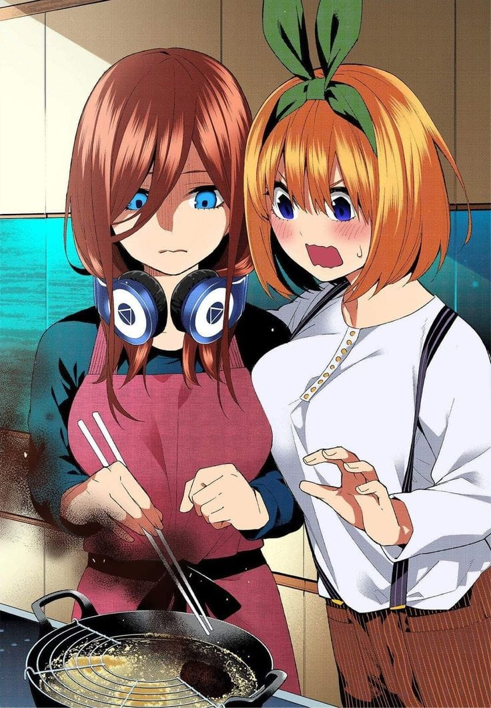

La narrativa de Go-Tōbun no Hanayome se estructura a través de una cuidada progresión de arcos argumentales donde el crecimiento académico de las hermanas corre paralelo a la maduración emocional del grupo y a la resolución gradual del enigma sobre la identidad de la futura novia. A continuación se desglosan los hitos fundamentales de la trama y su consecuente traslación al formato audiovisual animado.
La historia se inicia cuando Fuutarou Uesugi, impulsado por una remuneración económica cinco veces superior a la del mercado, asume el compromiso de desempeñarse como tutor privado de la acomodada familia Nakano. Al descubrir que sus estudiantes son Itsuki Nakano —con quien ya había tenido un ríspido encuentro en el comedor estudiantil— y sus cuatro hermanas quintillizas idénticas (Ichika, Nino, Miku y Yotsuba), la labor parece destinada al fracaso inmediato. Las cinco jóvenes lo rechazan de forma unánime y la primera evaluación diagnóstica arroja resultados alarmantes: la suma combinada de las notas de las cinco apenas alcanza 100 puntos sobre 500 posibles (Haruba, 2017).
Lejos de rendirse, Fuutarou identifica que cada una posee fortalezas individuales latentes en asignaturas específicas. Este descubrimiento sella su promesa personal: lograr que las cinco hermanas se gradúen juntas de la preparatoria con una sonrisa y sin repetir el año escolar, estableciendo el pacto moral que guiará el resto de la obra (Haruba, 2017).
Durante el festival de fuegos artificiales, Fuutarou logra comprender la vocación secreta de actriz de Ichika, consolidando la primera señal de confianza familiar. Posteriormente, los exámenes parciales sitúan al protagonista frente a su primera gran prueba de fuego: el padrastro de las jóvenes, Maruo Nakano, estipula que si alguna de las cinco reprueba, Fuutarou será despedido de forma irrevocable. Gracias a maratónicas jornadas nocturnas de estudio y al esfuerzo solidario del quinteto, las chicas aprueban raspando sus asignaturas, demostrando por primera vez su capacidad de cooperación (Haruba, 2018).
El arco del campamento escolar en las montañas introduce uno de los mitos románticos determinantes de la historia: la leyenda del baile de la hoguera, según la cual aquellos que enlacen sus manos durante el instante culminante de la fogata quedarán unidos sentimentalmente para siempre. Este episodio intensifica la sutil competencia entre las hermanas por captar la atención de su tutor (Haruba, 2018).
Tras caer enfermo debido al extenuante viaje escolar, Fuutarou comparte durante su convalecencia hospitalaria el origen de su inquebrantable dedicación al estudio. Cinco años atrás, siendo un niño rebelde, indisciplinado y desmotivado en Kioto, conoció fortuitamente a una misteriosa niña de cabello claro que le enseñó que el estudio no debía entenderse como una imposición vacía, sino como un puente para volverse alguien indispensable y estar a la altura de las personas amadas (Haruba, 2019).
Aquella niña le entregó un amuleto especial que Fuutarou conserva celosamente como su mayor tesoro. El enigma se intensifica cuando se percata de que Itsuki posee un amuleto exactamente idéntico adquirido en el mismo templo de Kioto, abriendo la incógnita sobre cuál de las cinco hermanas fue la auténtica niña del pasado (Haruba, 2019).
El arco conocido como "Las siete despedidas" representa el punto de inflexión más dramático de la primera mitad del relato. Una fuerte disputa de convivencia entre Nino e Itsuki fractura temporalmente el hogar familiar, provocando que ambas abandonen el apartamento y se alojen por separado en hoteles. Fuutarou debe redoblar esfuerzos para comprender los temores de Nino —quien se resiste a aceptar que sus hermanas crezcan y cambien— y mediar pacientemente hasta reconciliar a la familia (Haruba, 2019).
Tras mudarse conjuntamente a un departamento mucho más modesto costeado con sus propios recursos, las hermanas afrontan los temidos exámenes finales bajo amenaza de transferencia escolar forzada. El arco culmina con la histórica confesión amorosa frontal de Nino Uesugi en el capítulo 59, un acontecimiento que rompió los clichés de los romances tradicionales al no recurrir a malentendidos ni retractaciones (Haruba, 2019; Oricon, 2020).
En el último año académico, el destino sitúa a Fuutarou y a las cinco hermanas en la misma aula de clases, intensificando la rivalidad afectiva durante el viaje de fin de curso a Kioto en lo que la comunidad de seguidores denominó la "guerra de hermanas". En este viaje se revela la verdad completa del pasado: la niña que Fuutarou conoció en Kioto fue originalmente Yotsuba Nakano, quien por sentimientos de culpa e inseguridad había preferido mantener su identidad en secreto para no perjudicar a sus hermanas (Haruba, 2020).
El clímax definitivo tiene lugar durante el monumental arco del festival escolar del amanecer. Tras tres días de intensas vivencias, Fuutarou toma su decisión y acude al aula donde se encuentra Yotsuba, declarando sus sentimientos y cerrando el círculo emocional iniciado años atrás. La historia concluye con la esperada ceremonia nupcial en el futuro y un epílogo donde las cinco hermanas, ahora adultas e independientes con trayectorias profesionales consolidadas, celebran la permanencia indestructible de su hermandad (Haruba, 2020).
El salto del papel a la pantalla chica comenzó en enero de 2019 con el estreno de la primera temporada televisiva, producida por el histórico estudio Tezuka Productions y bajo la dirección de Satoshi Kuwabara. A lo largo de 12 episodios, esta entrega adaptó con fidelidad desde los primeros capítulos introductorios hasta el viaje del campamento escolar, gozando de una resonancia masiva en plataformas de transmisión internacional (Crunchyroll, 2019).
Para la segunda temporada, titulada Go-Tōbun no Hanayome ∬ y estrenada en enero de 2021, la producción pasó a manos de Bibury Animation Studios con la dirección de Kaori. Esta segunda etapa introdujo un rediseño artístico notable, con un estilizado empleo del color y una animación mucho más fluida y expresiva, cubriendo los arcos cruciales de Las siete despedidas y los exámenes finales con un éxito crítico y comercial abrumador (Crunchyroll, 2021).
La conclusión oficial de la historia se trasladó a la pantalla grande con el largometraje Go-Tōbun no Hanayome: La película, estrenado en cines japoneses el 20 de mayo de 2022 y producido nuevamente por Bibury Animation Studios bajo la dirección de Masato Jinbo. Con una recaudación multimillonaria en taquilla y funciones agotadas, la cinta adaptó el festival escolar y la conmovedora boda final (Crunchyroll, 2022).
Posteriormente, en el año 2023 se emitió un aclamado especial televisivo que recopiló historias y capítulos no adaptados del manga original, incluyendo el viaje de luna de miel en Hawái, ofreciendo a los espectadores un cierre integral y definitivo de la franquicia multimedia (Crunchyroll, 2022).
El especial de Hawái, emitido en 2023, mostró por primera vez a las hermanas en una aventura posterior a la boda, combinando humor característico con momentos de nostalgia por el cierre definitivo de la franquicia (Anime News Network, 2023).
Desde el primer capítulo, la obra planteó un acertijo al lector: ¿qué hermana es la niña de Kioto y, por tanto, la futura novia? Durante años, los fans analizaron peinados, colores de cabello en flashbacks, diálogos ambiguos y el amuleto duplicado, generando una de las comunidades de teorización más activas del manga reciente. La propia editorial alimentó el debate con portadas deliberadamente ambiguas y encuestas oficiales (MyAnimeList, 2021).
La revelación definitiva —que la niña fue Yotsuba, quien adoptó el nombre "Rena" años después en honor a su madre— releyó toda la obra: muchos gestos aparentemente menores de Yotsuba, como su insistencia en ayudar a Fuutarou desde el primer día, cobraron un nuevo significado retroactivo (Haruba, 2020).
| Adaptación | Estudio | Fecha | Contenido adaptado |
|---|---|---|---|
| Temporada 1 | Tezuka Productions | Enero–marzo 2019 | Del encuentro al campamento escolar (12 episodios) |
| Temporada 2 (∬) | Bibury Animation Studios | Enero–marzo 2021 | Siete despedidas, exámenes finales y viaje al balneario |
| Película | Bibury Animation Studios | 20 de mayo de 2022 | Festival escolar, elección y boda (final del manga) |
| Especial (Hawái) | Bibury Animation Studios | 2023 | Epílogo original: la luna de miel |